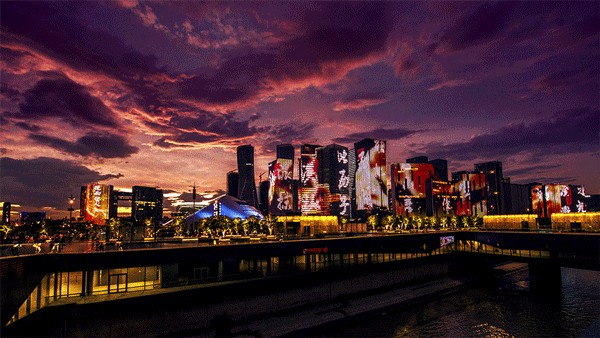

Bangkok


Geographical Location
Southeast Asia
Bangkok, Thailand’s capital, is a large city known for ornate shrines and vibrant street life. It is officially known in Thai as Krung Thep Maha Nakhon and colloquially as Krung Thep.
Bangkok welcomes more visitors than any other city in the world and it doesn’t take long to realize why. Bangkok is a city of contrasts with action at every turn. Marvel at the gleaming temples, catch a tuk-tuk through bustling Chinatown, or take a longtail boat through floating markets. Food is another Bangkok highlight, from local dishes served at humble street stalls to haute cuisine at romantic rooftop restaurants.
Photo Gallery

Khlong Lat Mayom water market
Khlong Lat Mayom, one of the best floating markets in Bangkok. It is most famous for its food. Try snakehead fish and the shrimps.

The Grand Palace is a complex of buildings at the heart of Bangkok.

Khao San Road, which now represents a series of streets, is a place in downtown Bangkok where backpackers and tourists are immediately drawn to from when they first touch down in the airport.

Wat Arun is one of the most popular and well-known places of worship. Famous for its iridescent glow when first light hits its porcelain finish at dawn, it also resembles an ancient city at first glance.
Hangzhou
Geographical Location
Asia

Hangzhou, situated in eastern China, is a city that seamlessly blends ancient heritage with natural splendor. At the heart of its allure lies the iconic West Lake, a UNESCO World Heritage Site celebrated for its picturesque landscapes...
Photo Gallery

West Lake is a UNESCO World Heritage Site in Hangzhou, China, celebrated for its serene waters, enchanting gardens, historic temples, and a profound cultural connection to classical Chinese landscapes.

Lingyin Temple, located near West Lake in Hangzhou, is a renowned ancient Buddhist temple known for its rich history, intricate architecture, and serene natural surroundings.

Alibaba Group is a multinational conglomerate based in China, known for its e-commerce platforms, cloud computing services, and digital technology innovations, playing a pivotal role in shaping the global digital economy.
Boston, Massachusetts


Geographical Location
North America
Boston, Massachusetts, is a city where American history comes to life. With its storied past, including the Boston Tea Party and the Battle of Bunker Hill, the city preserves its heritage...
Photo Gallery

Harvard University is an iconic Ivy League institution in Cambridge, Massachusetts, renowned for its academic excellence and historic prestige.

The Charles River is a picturesque waterway winding through the Boston metropolitan area, offering scenic views and recreational opportunities for residents and visitors alike.

Boston Common is a historic and beloved urban park located in the heart of Boston, serving as a tranquil oasis amid the city's hustle and a gathering place for both residents and tourists.